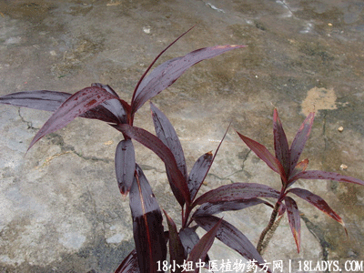

(本文解释权归中药材天地网兄弟站-18小姐中医植物药方网所有,如需转载请注明出处)
红铁树(中药材植物名:铁树)(植物科目:龙舌兰科)

植物名：铁树。
生长环境：本品为直立、粗状灌木。为庭院普遍栽培。
分布：自喜马拉雅山东部至我国和东印度群岛。广州栽培尚普遍。
入药部分：花。
采集期：春、冬。
自采地点：家种。
性味：性平、味淡。
功能：凉血、止血。
主治、用量和用法：内伤咳血：干花3至5钱，猪瘦肉适量，清水煎服。
附录：（根）治大便下血：干根1至2两，猪瘦肉适量，清水煎服。
（叶）治红白痢：干叶1至2两，以红叶为佳，清水煎服。
参考资料：《广东省中医验方交流总编》治水泻方：铁树木叶1两（切碎）、鸡蛋1只（打开），搅匀煎水服。
《广州市中医验方选集第一季》新会公社医院新洲分院治妊娠恶阻验方：铁树花，新鲜5钱，猪瘦肉适量同煎服。
(本文解释权归中药材天地网兄弟站-18小姐中医植物药方网所有,如需转载请注明出处)